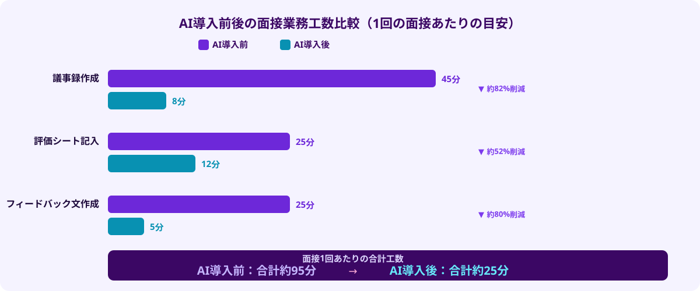
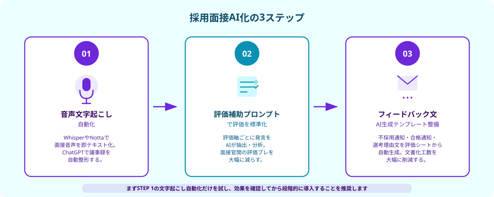

採用面接の議事録・評価で起きている3つの課題
採用活動において、面接そのものより「面接後の処理」に想定以上のコストがかかっているケースが多くあります。具体的には以下の3つの課題が典型的です。
①議事録作成に時間がかかりすぎる：面接中はメモを取りながら対話に集中しなければならないため、発言内容を正確に記録するのは難しい状況です。面接後に記憶を頼りに議事録を書こうとすると、1件あたり30〜60分かかることも珍しくありません。複数の候補者を1日に面接する場合、この作業だけで数時間が消えます。
②評価が面接官個人の主観に依存する：評価シートがあっても、「コミュニケーション能力：4点」という評価の根拠が面接官によって異なるため、複数人での議論が難しくなります。特に、採用担当者と現場マネージャーで評価の観点が食い違い、採用決定に時間がかかるケースが増えています。
③フィードバック文の作成が形骸化する：不採用通知のフィードバックや社内向けの選考理由の文書化は、属人的な作業になりやすく、後から「なぜその判断をしたか」が追えない状態になりがちです。また、フィードバック文の品質が担当者によって大きく差が出るという問題もあります。
これら3つの課題は、AIツールを導入することで大幅に解消できます。特に、音声認識・自然言語処理・生成AIを組み合わせることで、議事録作成から評価補助・文書生成まで一連の業務を効率化できます。
AIで効率化できる面接業務の3つのポイント
採用面接の業務フローを整理すると、AIが貢献できるポイントは大きく3つあります。

ポイント①：音声文字起こしによる議事録の自動化——面接の音声を自動的にテキスト化することで、議事録作成の工数を大幅に削減できます。WhisperやNotta、COTOHA Meetingなどのサービスを使えば、発言者ごとに分離された文字起こしが数分で完成します。さらに、ChatGPTやClaudeに「この面接録をもとに議事録を構造化してください」と依頼することで、ポイントを絞った議事録が即座に生成されます。
ポイント②：評価シートのAI補助による標準化——面接の発言記録を評価基準に照らして分析するプロンプトを用意しておくことで、「この発言はコミュニケーション能力の評価軸でどう評価されるか」という補助コメントをAIが出力します。面接官はAIの補助コメントを参照しながら最終評価を確定させるため、評価のブレが減少し、複数の面接官間での議論が具体化しやすくなります。
ポイント③：フィードバック文・選考理由のAI生成——評価シートの内容をもとに、不採用通知のフィードバック文や社内向けの選考理由文を生成するプロンプトを準備することで、文書化の工数を削減できます。「今回はご縁がなかった旨を丁寧に伝えつつ、応募者の強みも認める」という指示を加えることで、配慮のある通知文が数秒で下書きされます。
AIで採用面接業務を効率化する3ステップ
具体的にどのようなステップで導入すればよいか、実践的な手順を解説します。

- STEP 1：音声文字起こしツールを導入し、議事録作成を自動化する
- STEP 2：評価補助プロンプトを設計し、評価シートの標準化を図る
- STEP 3：フィードバック文・選考理由文の生成テンプレートを整備する
STEP 1：音声文字起こしツールの導入
まず、面接の会話を録音・文字起こしする仕組みを整えます。候補者の同意を得た上で、Zoom等のビデオ会議ツールのレコーディング機能か、スマートフォンの録音アプリを使います。録音した音声データをWhisper（OpenAIの音声認識モデル）やNottaなどのサービスにアップロードすると、数分で文字起こしが完成します。
文字起こしが完成したら、ChatGPTやClaudeに以下のようなプロンプトを使って議事録を整形します。
📋 議事録整形プロンプト（例）
以下は採用面接の文字起こしです。次の形式で議事録を作成してください。
①候補者の自己紹介・経歴サマリー（3〜5行）
②主要な質問と回答のまとめ（Q&A形式）
③面接官のメモ・所感として記録すべき点
④次のステップ（二次面接・合否連絡など）
＜文字起こしテキスト＞
[ここに文字起こしを貼り付ける]
STEP 2：評価補助プロンプトの設計
次に、自社の評価軸（例：コミュニケーション力・論理的思考・自律性・チームフィット等）を定義したプロンプトを設計します。面接の議事録をこのプロンプトに渡すと、AIが「各評価軸に関連する発言」を抽出し、評価の根拠となるコメントを出力します。
📋 評価補助プロンプト（例）
以下の面接議事録をもとに、各評価軸ごとに関連する発言を抽出し、1〜5点の評価とその根拠コメントを出力してください。
【評価軸】
1. コミュニケーション力（相手に伝わる説明ができるか）
2. 課題解決力（問題に対して論理的に取り組んでいるか）
3. 自律性（主体的に動いた経験があるか）
4. 当社へのフィット感（価値観・仕事観の一致度）
＜面接議事録＞
[ここに議事録を貼り付ける]
AIの出力はあくまで「補助」であり、最終評価は面接官が行います。ただし、「AIはこの発言をコミュニケーション力4点と評価し、その理由は〇〇」という共通の根拠があることで、複数の面接官間の議論がスムーズになります。
STEP 3：フィードバック文・選考理由文テンプレートの整備
最後に、評価シートの内容をもとに各種文書を生成するテンプレートを整備します。不採用通知・合格通知・社内の選考理由メモなど、採用プロセスで発生する文書をAIで下書き生成できるようにしておくことで、文書化の工数が劇的に減ります。
特に不採用通知は、配慮ある言葉遣いが求められるため、「応募者の強みを認めつつ、今回の選考では別の方向性を採用することになった旨を丁寧に伝える」という指示を固定してプロンプトに組み込んでおくことが重要です。
活用できる主なAIツール比較
採用面接のAI効率化で活用できる主なツールを整理します。
音声文字起こし系：
「Notta（ノッタ）」は日本語の文字起こし精度が高く、話者識別機能を持つため面接向きです。月額有料プランで長時間音声に対応。「COTOHA Meeting Assist」はNTTコミュニケーションズのサービスで、ビジネス用語への対応が強みです。OpenAIの「Whisper」はAPIで利用でき、自社システムへの組み込みが可能ですが、エンジニアの設定が必要です。
生成AI系（議事録整形・評価補助・文書生成）：
ChatGPT（GPT-4o）は汎用性が高く、議事録整形・評価補助・フィードバック文生成のすべてに対応できます。Claude（Anthropic）は長文の読み込みが得意で、長い文字起こしデータを渡してもコンテキストを保持しやすい特徴があります。どちらも月額有料プランで十分な機能が使えます。
💡 ツール選定のポイント
既存のAIツール（ChatGPT等）でプロンプトを活用する部分は、エンジニア不要で自社で進めることができます。一方、WhisperのAPI組み込みや自社の採用管理システムとの連携など「開発が必要な部分」は、スポット外注でエンジニアに依頼するのが効率的です。
導入時のよくある失敗と対策
採用面接のAI化を進める際に陥りやすい落とし穴とその対策を3つ紹介します。
失敗①：候補者の同意なく録音・AI処理を行う
面接を録音してAI処理する場合、個人情報保護法および会社のプライバシーポリシーへの対応が必要です。面接開始前に録音・AI活用について候補者の同意を得るプロセスを設けてください。また、音声データ・文字起こしデータの保管ポリシー（いつまで保持するか、誰がアクセスできるか）を明文化しておくことが重要です。
失敗②：AIの評価結果をそのまま採用判断に使う
AIの評価補助はあくまで「面接官の判断を助けるもの」です。AIのスコアを最終判断の根拠にすると、プロンプト設計上のバイアスが採用に影響するリスクがあります。面接官が評価の最終判断を行い、AIは「材料の整理役」と位置づけることを社内でルール化してください。
失敗③：いきなりすべての業務を一気にAI化しようとする
議事録作成・評価補助・文書生成を同時に導入しようとすると、プロンプト設計・ツール整備・社内ルール策定が重なり、頓挫しやすくなります。まずSTEP 1（文字起こし自動化）だけを2〜4週間試し、効果を確認してからSTEP 2・3に進む段階的なアプローチを推奨します。
よくある質問
- Q. 採用面接でAIはどう活用できますか？
- A. 文字起こしの自動化、評価シートの標準化、フィードバック生成の3ステップで活用できます。
- Q. 面接バイアスはAIでどう軽減できますか？
- A. 評価基準を標準化し、感覚的な印象ではなくデータに基づいた評価を行うことで軽減できます。
- Q. どんなAIツールが使われていますか？
- A. 議事録自動生成ツールと評価分析ツールを組み合わせて使うケースが一般的です。
まとめ・採用業務のAI化をスポット外注で加速させる
採用面接の議事録・評価業務のAI化は、「音声文字起こし → 評価補助プロンプト → 文書生成テンプレート」の3ステップで段階的に進めることができます。ChatGPTやClaudeを使ったプロンプト活用の部分は自社内で始められ、APIの組み込みや既存システムとの連携が必要な部分はスポット外注で効率的に実装できます。
特に、採用管理ツール（SmartHR・HRMOSなど）とAIを連携させて文字起こしから評価シートへの自動転記を実現したい場合や、社内独自の評価フレームワークに合わせたカスタムプロンプトを実装したい場合は、エンジニアへのスポット発注が最短経路です。週末2日・予算10万円前後で動くものを試作してもらい、効果を確認してから本格化するアプローチが失敗しにくいやり方です。
ANKENには、採用・HR領域のAI実装経験があるエンジニアも登録しています。「具体的にどう発注すればいいか」という段階から無料でご相談いただけます。
文字起こしAPI組み込み・評価プロンプト設計・採用管理ツール連携など、採用業務のAI化に対応できるエンジニアにスポットで依頼できます。週末2日から、固定費ゼロでスタートできます。
👉 無料で相談する（スポット外注の流れを確認）発注経験ゼロでも大丈夫。どこからAI化を始めるか、まずご相談ください。